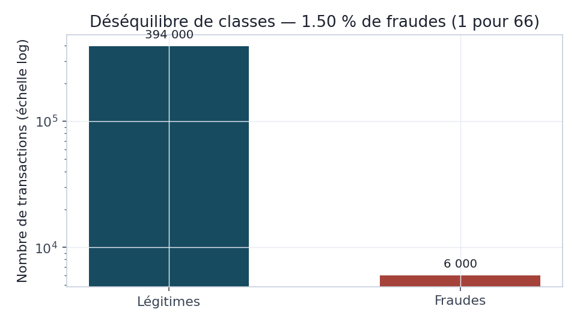
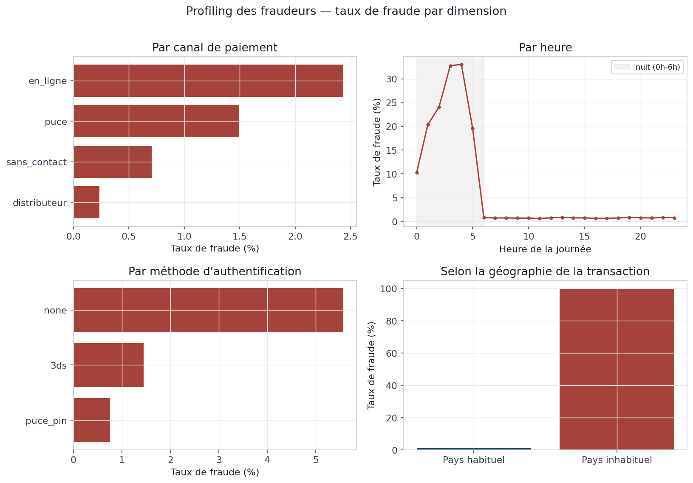
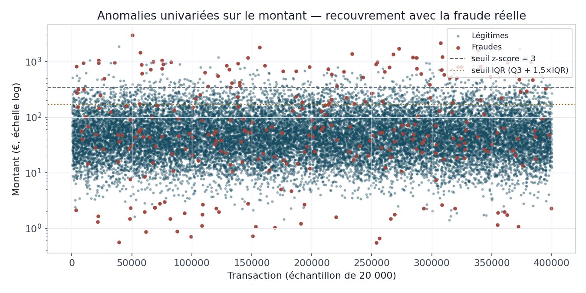
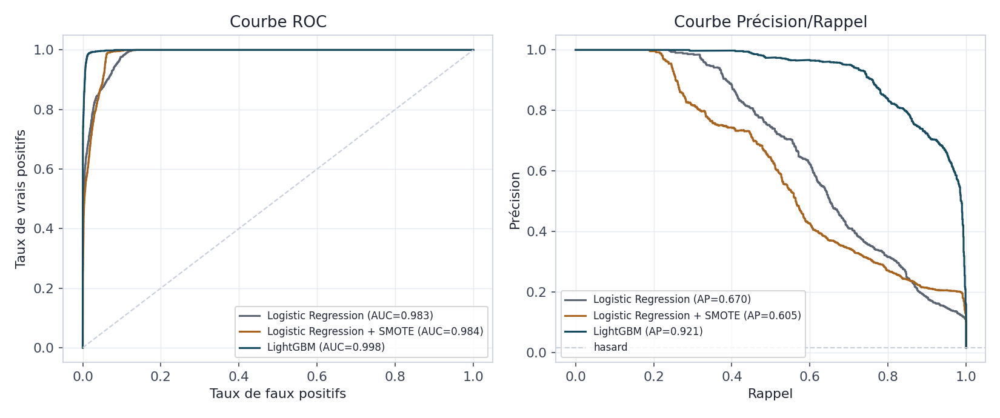
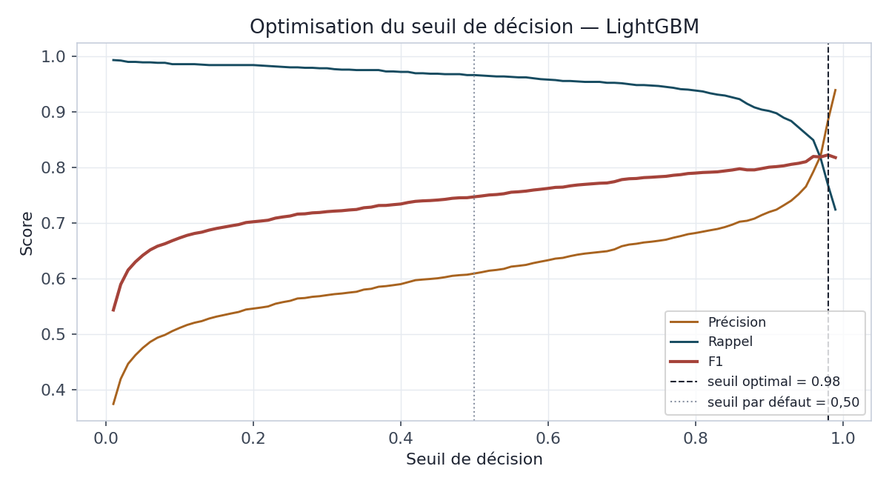
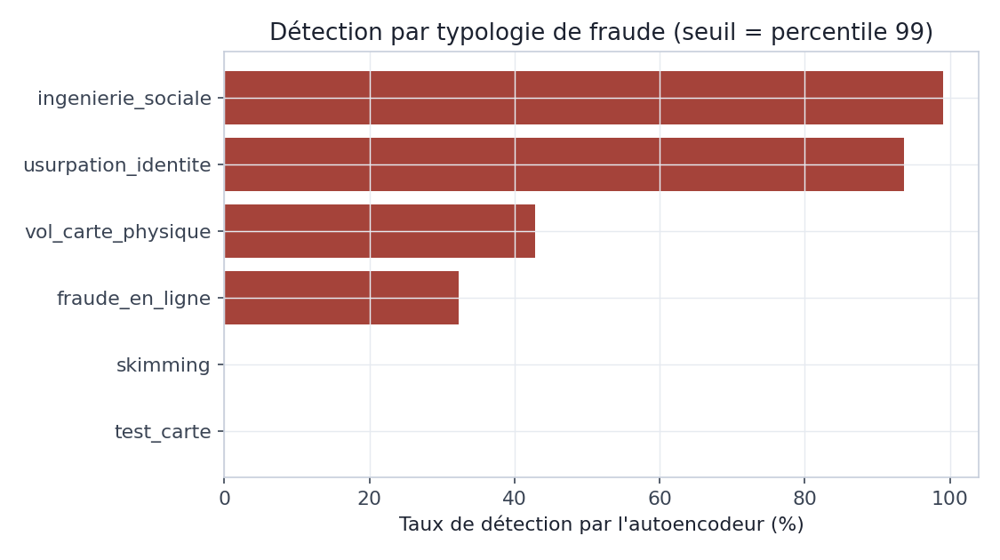
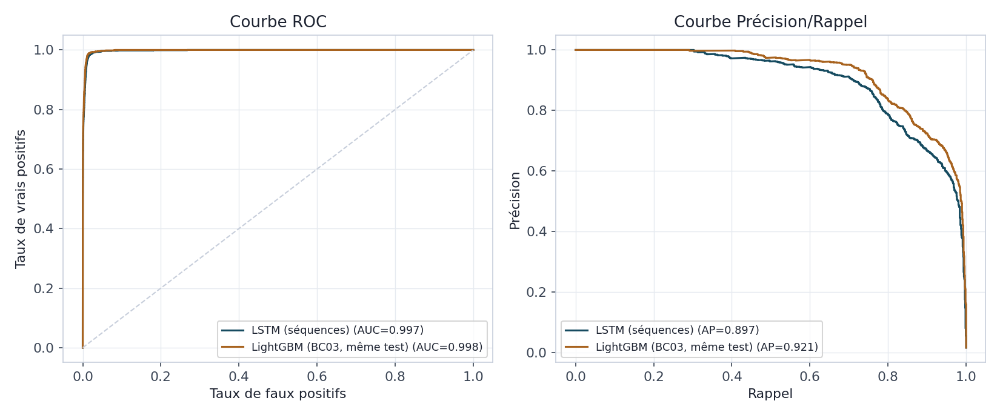

BC05 — API & production
Monitoring de dérive (Evidently)

- Scénario normal : 9,1 % de dérive — pas d'alerte
- Scénario simulé : 27,3 % — alerte déclenchée
- Seuil d'alerte : 20 %
Pipeline Machine Learning & Deep Learning de bout en bout — du socle de données à l'API de production
Blocs BC01 à BC05 · 5 000 clients simulés · 400 000 transactions · github.com/k-b-mansour/Detection-Fraude-



| Configuration | Déséquilibre | Résultat notable |
|---|---|---|
| Logistic Regression | Aucun | F1 = 0,580 |
| Logistic Regression + SMOTE | SMOTE 30 % | F1 = 0,368 (dégradé) |
| LightGBM | scale_pos_weight | AUC = 0,998 |




skimming — pensé comme une rafale — est en réalité généré de façon indépendante| Run | Résultat | Cause |
|---|---|---|
| #1 | Échec | pytest nu (sys.path) |
| #2-3 | Échec | Nom d'image GHCR invalide |
| #4 | Succès | Test + build + publication GHCR |
ghcr.io/k-b-mansour/fraud-api — sur de vrais runners GitHub Actions.